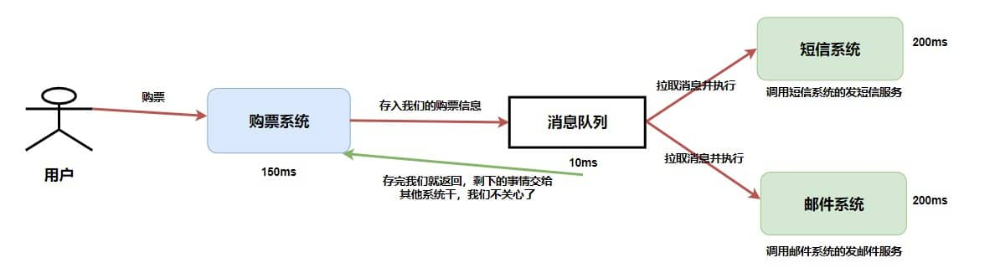

摘要：微服务架构中，服务之间同步调用是通过 RPC 来实现的，服务间的异步处理、应用解耦要通过 MQ来实现。
目录
[TOC]
消息队列
微服务架构中，服务之间同步调用是通过 RPC 来实现的，服务间的异步处理、应用解耦要通过 MQ来实现。
- 虽然可以通过多线程来实现异步调用，但是这种异步调用不支持持久化，可能会造成消息丢失，所以一般都集成RabbitMq或者RocketMq。
消息队列（Message Queue，MQ ）：是存放消息的容器，当需使用消息时，直接从容器中取出消息使用。
- 参与消息传递的双方称为 生产者 和 消费者 ，生产者负责发送消息，消费者负责处理消息。
- 由于队列 Queue 是一种先进先出的数据结构，所以消费消息时也是按照顺序来消费的。
操作系统中进程通信的一种很重要的方式就是消息队列。
这里提到的消息队列稍微有点区别，更多指的是各个服务以及系统内部各个组件/模块之前的通信，属于一种 中间件 。

消息生产、消费流程
存储机制
一条普通的MQ消息，从产生到被消费，大概流程如下：
- 生产者产生消息，发送到MQ服务器；
- MQ服务器收到消息后，将消息持久化到存储系统；
- MQ服务器返回ACK到生产者；
- MQ服务器把消息push给消费者；
- 消费者消费完消息，响应ACK；
- MQ服务器收到ACK，认为消息消费成功，即在存储中删除消息。

优点、使用场景
你用消息队列做什么？
- 应用解耦：将不同的系统之间解耦开来。当需要对接多个系统，但是又不知道究竟有多少人关心的时候，就会考虑采用消息队列来通信。
- 例如用消息队列来暴露退款信息，退款成功与否。很多下游关心，但是实际上，我们退款部门根本不关心有谁关心。在不使用消息队列的时候，我们就需要一个个循环调用过去；
- 如果模块之间不直接调用，耦合度就会很低，那么修改或者新增一个模块对其它模块的影响会很小，从而实现可扩展性。
- 异步处理、异步调用：将一个同步流程，利用消息队列来拆成多个步骤。这个特性被广泛应用在事件驱动之中。
- 比如说在退款的时候，退款需要接入风控，多个款项资金转移，这些步骤都是利用消息队列解耦，上一个步骤完成，发出事件来驱动执行下一步；
- 发送者将消息发送给消息队列之后，不需要同步等待消息接收者处理完毕，而是立即返回进行其它操作。消息接收者从消息队列中订阅消息之后异步处理。
- 例如：在注册流程中，用户在填写完注册信息之后就可以完成注册，而将发送验证邮件这一消息发送到消息队列中。
- 流量削锋填谷：主要是为了应对短时间有大量的请求到达，会压垮服务器。
- 一般来说，数据库只能承受每秒上千的写请求，如果在这个时候，突然来了几十万的请求，那么数据库可能就会崩掉。
- （缓冲的效果）可以将请求发送到消息队列中，服务器按照其处理能力慢慢从消息队列中订阅、拉取消息进行处理。与限流算法中的漏桶算法类似，都是进行削峰填谷。
- （这是最大的考点，如电商秒杀）
缺点
- 可用性降低：引入任何一个中间件，或者多任何一个模块，都会导致可用性降低。（所以这个其实不是MQ的特性，而是所有中间件的特性）。需考虑消息丢失、或 MQ 挂掉等情况。
- 系统复杂性提高：分两方面，一方面是消息队列集群维护的复杂性，一方面是代码的复杂性。
- 一致性难保证：引入消息队列往往意味着本地事务不可用，那么就容易出现数据一致性的问题。真正消费者没有正确消费消息、导致数据不一致。例如业务成功了，但是消息没发出去。
（升华主题）几乎所有的中间件的引入，都会引起类似的问题。
再有就是消费消息问题（引入）。需解决消息重复消费、消息传递顺序、分布式事务、消息堆积、消息丢失，需考虑高可用、集群等。
消息消费问题
分布式调用语义：
- 至少一次语义：指消费者至少消费消息一次。这意味着存在重复消费的可能，解决思路就是幂等；
- 至多一次语义：指消费者至多消费消息一次。这意味着存在消息没有被消费的可能，基本上实际中不会考虑采用这种语义，只有在日志采集之类的，数据可以部分缺失的场景，才可能考虑这种语义；
- 恰好一次语义：最严苛的语义，指消息不多不少恰好被消费一次；
绝大多数情况下，我们追求的都是至少一次语义：即生产者至少发送一次，可能重复发送；消费者至少消费一次，可能重复消费（虽然去重了，但是我们也认为消费了，只不过这个消费啥也没干）。
- 结合之下，就能发现，只要解决了消费者重复消费的问题的，那么生产者发送多次，就不再是问题了。
如何解决六大消费问题
- 消息丢失：生产者、消费者用同步方式在生产、消费完消息之后再发送 ACK 确认，
Broker 代理存储端用 RocketMQ 的刷盘机制，主从节点都写入成功，才反馈成功的ack给生产者。
- 消息堆积：先排查是不是 bug，然后生产者方面限流、降级、熔断（削峰） + 消费者方面紧急扩容、优化消费逻辑等。
- 重复消费：用
Redis 的 set、MySQL 的主键或者唯一性索引做幂等性校验。
- 保证顺序消费：同一语义下的消息发送至同一个MQ 服务器、被同一个消费者消费，且等到M1消费端ACK成功后，M2再发送。比如
Kafka的全局有序消息。
- 保证数据一致性：通过
RocketMQ 的分布式事务消息（加入消息状态，待发送、可发送） + 事务反查机制。
- 保证高可用：复制多副本机制 +
Kafka 重新选举 leader。
消息丢失
一个消息从生产者产生，到被消费者消费，主要经过三个过程。因此可以从这三个阶段保证MQ不丢失消息：
- 生产者丢失消息：生产者调用
send方法发送消息后，可能因网络问题并没有发送过去。
- 采用同步方式发送：发送消息后返回成功状态，就表示消息正常到达了存储端
Broker；如果发送异常或者返回非成功状态，自动重试消息发送。
- 可以使用事务消息：
RocketMQ 的事务消息机制就是为了保证零丢失来设计的。
Broker 代理存储端丢失消息：确保消息持久化到磁盘。如下，RocketMQ 的刷盘机制。Kafka 会把消息持久化到磁盘。- 消费者丢失消息：比如消费者刚拿到消息准备进行真正消费时，突然挂掉，实际上并没有被消费。
- 解决：消费者执行完业务逻辑后，再反馈回
Broker已消费成功。
RocketMQ 刷盘机制
队列中的消息是如何进行存储持久化？
在单个结点层面：
- 同步刷盘：生产者消息发过来时，只有持久化到磁盘，Broker 存储端（MQ）才返回一个成功的
ACK 。
- 能保证消息不丢失，但是影响了性能。
- 适用于金融等特定业务场景。
异步刷盘：采用后台异步线程提交的方式执行刷盘操作。只要消息写入PageCache 缓存，就返回一个成功的ACK响应。
- 提高了MQ的性能，但是如果这时候机器断电了，就会丢失消息。
- 适用于（如发验证码等）对于消息保证要求不太高的业务场景。
集群主从模式下：Borker 一般是集群部署的，根据主节点返回消息给客户端时是否需要同步从节点分类：
- 同步复制（同步双写）：只有主节点和从节点都写入成功，才反馈成功的ack给生产者。 保证了消息不丢失，但是降低了系统的吞吐量。
- 异步复制： 只要消息写入主节点成功，就返回成功的ack。速度快，但是会有性能问题。
消息堆积
消息重复发送
消息积压：指峰值太大导致消息堆积在队列中。
原因是：因为生产者的生产速度，远大于消费者的消费速度。
遇到消息积压问题时：
先排查是不是有bug产生了，如果是bug需要解决bug。如果不是bug，可以从几个方面考虑：
- 生产者方面，控制生产速率：不太会倾向于；
- 消费者方面，加快消费速率：提升整体消费能力，先保证消息都消费完。
- 提高消费单条消息的效率：优化消费逻辑。例如原本同步消费的，可以变成异步消费。把耗时的操作从消费的同步过程里面摘出去；
- 增加消费者的数量：临时紧急扩容消费者，增加集群规模。比如，水平扩容，增加Topic的队列数和消费组机器的数量。Kafka 的消费者组。不过这个只能治标，缓解问题。
- （刷亮点）其实消息积压要看是突然的积压，即偶然的，那么只需要扩大集群规模，确保突然起来的消息都能在消息中间件上保存起来，就可以了。因为后续生产者的速率回归正常，消费者可以逐步消费完积压的消息。
- 如果是常态化的生产者速率大于消费者，那么说明容量预估就不对。这时候就要调整集群规模，并且增加消费者。典型的就是，
Kafka增加新的Partition。
消息重复消费、幂等性
消息队列是可能发生重复消费的：
- 生产端：生产者发送过程中出现超时（消息丢失），重试，可能向MQ重复发送消息，直到拿到成功的ACK。
- 消费端：消费消息一般的流程：拉取消息、业务逻辑处理、提交消费位移都可能出现超时重复消费。假设业务逻辑处理完，事务提交了，但是需要更新消费位移时，消费者挂了，这时候另一个消费者就会拉取到重复的消息。
解决方案：使用幂等性校验处理重复消息。
- 加唯一索引：每次处理前先判断是否已消费，已经消费直接返回成功。如果重复插入数据的话，就会抛出异常。具体实现可用：
- MySQL 的主键或者唯一性索引：基于唯一键来保证不会插入重复数据。
- 写入 Redis 的 set：因为
Redis 的 key 和 value 是天然支持幂等的；
- 因为你只需要处理一次，所以不必采用分布式锁的模式，只需要将超时时间设置得非常非常长。
- 带来的不利影响就是Redis会有非常多的无用数据，而且万一真有消息在 Redis 过期之后又发过来，那还是会有问题。
- 开启
KafKa的幂等性功能：将enable.auto.commit参数设置为 false，关闭自动提交，拉取到消息、再手动提交 offset。
幂等性
也被应用在中。
幂等性：即任意多次执行所产生的影响均与一次执行的影响相同。
导致幂等性的原因：
什么情况下会出现一个请求被多次执行呢？
- 用户重复提交：
- 客户端等待服务端响应请求超时了，因此又发送了相同的请求。
- 但此时服务端已经执行了请求，只是由于短暂的网络波动导致响应在发送给客户端的过程中延迟了。
- 举个例子：用户支付购买某个课程，由于重试的问题导致支付了两次。在执行用户购买课程的请求时需要判断用户是否已经购买过。这样的话，就不会因为重试的问题导致重复购买了。
- 恶意攻击；
- 分布式系统中，为避免数据丢失，采用的超时和重试机制；
怎么保证幂等性：
- 加唯一索引：每次处理前先判断是否已消费，已经消费直接返回成功。如果重复插入数据的话，就会抛出异常。具体实现可用：
- MySQL 的主键或者唯一性索引：基于唯一键来保证不会插入重复数据。
insert前先select：在保存数据的接口中，在insert前，先根据requestId等字段先select一下数据。如果该数据已存在，则直接返回，如果不存在，才执行 insert操作。
- 写入 Redis 的 set：因为
Redis 的 key 和 value 是天然支持幂等的；
- 建一个带唯一业务标记的防重表，存储消息的全局唯一ID。
- token机制：请求接口之前，需要先获取一个唯一的token，再带着这个token去完成业务操作。服务端根据这个token是否存在，来判断是否是重复的请求。
- 更新逻辑中加锁，比如更新用户账户余额时：
- 加悲观锁：把对应用户的行数据锁住。同一时刻只允许一个请求获得锁，其他请求则等待。缺点：获取不到锁的请求一般只能报失败，比较难保证接口返回相同值。
- 加乐观锁：性能更好。在表中增加一个
timestamp或者version字段，在更新前，先查询一下数据，同时也更新version。
- 分布式锁：直接在数据库上加锁的性能不够友好。目前最流行的实现是通过Redis，具体实现一般都是使用Redission框架。
- 状态机：有些业务表是有状态的，比如订单表中有：1-下单、2-已支付、3-完成、4-撤销等状态，可以通过限制状态的流动来完成幂等。

保证生产者只会发送消息一次
答案：这个问题，可以拆成两个问题：
- 如何保证消息一定发出去了？可以考虑分布式事务，或者重试机制。
- 开启分布式事务需要消息中间件的支持。
- 超时机制，核心就是超时处理 + 查询。如果在消息发送明确得到了失败的响应，那么可以考虑重试，超过重试次数就需要考虑人手工介入。
- 如何确保只发送一次？
- 从前面来看，分布式事务天然就能保证只发送一次。
- 而超时机制，则完全无法保证。
（升华主题）其实我们追求的并不是消息恰好发送一次，而是消息至少发送一次，依赖于消费端的幂等性来做到恰好一次语义。
保证可靠性
- 发送端的可靠性：发送端完成操作后一定能将消息成功发送到消息队列中。
- 接收端的可靠性：接收端能够从消息队列成功消费一次消息。
两种实现方法：
- 保证接收端处理消息的业务逻辑具有幂等性：只要具有幂等性，那么消费多少次消息，最后处理的结果都是一样的。
- 保证消息具有唯一编号，并使用一张日志表来记录已经消费的消息编号。
保证消息的顺序性
消息的有序性：指可以按照消息的发送顺序来消费。先发出来的消息一定比后面发的消息先被消费。
- AB两台机器，A机器在实际上先于B机器发出来的消息，那么消费者一定先消费。涉及的是时钟问题。
- 一般意义上的消息顺序：同一业务（例如下单），同一主题：先创建订单消息、后支付消息。
- 假设生产者先后产生了两条消息，分别是下单消息（M1），付款消息（M2），M1 比 M2 先产生。
- 二者可能在不同的 MQ、被不同消费者消费，如何保证 M1 比 M2 先被消费呢？
部门业务上的消息顺序：不同业务，不同主题：先支付消息、后退款消息。（实际中，支付和退款差不多都是分属两个部门）。

保证消息顺序性的方法：生产者有序存储，消费者有序消费。一方面是投递的顺序，一方面是消费的顺序。
- 同一语义下的消息发送给同一个 MQ（
Partition）、被同一个消费者消费，且等到M1消费端ACK成功后，M2再发送。
- 如，用 Hash 取模法保证同一订单在同一队列中。
- 带来的问题是要慎重考虑负载均衡的问题，否则容易出现一个
Partition拥挤的问题。而且它还限制了，同一个Partition只能被一个线程消费，而不能让一个线程取数据而后提交给线程池消费。
Kafka的全局有序消息
比如Kafka的全局有序消息：生产者发消息时，1个Topic只能对应一个Partition（分区）、一个 Consumer，内部单线程消费。发送消息时指定 key/Partition。

保证数据一致性
数据不一致问题：生产者一定发出去了消息，或者消费者一定消费了消息。如
如何保证数据一致性呢？可以使用事务消息加上事务反查机制。
RocketMQ 的分布式事务消息
事务消息是的实现：
- 生产者产生消息，发送一条半事务消息到MQ服务器；
- MQ收到消息后，将消息持久化到存储系统，【这条消息的状态是待发送状态】；
- MQ服务器返回ACK确认给生产者，此时MQ不会触发消息推送事件；
- 事务：生产者执行业务操作、本地事务；
- 事务：如果本地事务执行成功，即
commit执行结果到MQ服务器；如果执行失败，发送rollback；
- 如果是正常的
commit，【MQ服务器更新消息状态为可发送】；如果是rollback，即删除消息；
- 如果消息状态更新为可发送，则MQ服务器会
push消息给消费者。
- 消费者消费完返回 ACK 给 MQ；
- 事务：如果MQ服务器长时间没有收到生产者的
commit或者rollback，它会反查生产者，然后根据查询到的结果执行最终状态。

保证高可用性
消息中间件如何做到高可用？
单机是没有高可用可言的，高可用都是对集群来说的。
延时消息
如何实现延时消息？
答案：在消息中间件本身不支持延时消息的情况下，大体上有两种思路：
如果是消费者和生产者自己存储延时消息，那么意味着每个人都需要写类似的代码来处理延时消息。所以比较好的是借助一个第三方，而第三方的位置也有两种模式：
- 第三方位于消息队列之前，第三方临时存储一下，后面再投递；
- 第三方位于某个特殊主题之后，生产者统一发到该特殊主题。第三方消费该主题，临时存储，而后到点发送到准确主题；
kafka 的高可用
- Kafka 的基础集群架构，由多个
broker组成，每个broker都是一个节点。
- 当创建一个
topic时，它可以划分为多个partition，而每个partition放一部分数据，分别存在于不同的 broker 上。
- 也就是说，一个
topic 的数据，是分散放在多个机器上的，每个机器就放一部分数据。
每个partition放一部分数据，如果对应的broker挂了，那这部分数据是不是就丢失了？那还谈什么高可用呢？
- Kafka 0.8 之后，提供了复制多副本机制来保证高可用，即每个 partition 的数据都会同步到其它机器上，形成多个副本。
- 所有的副本会选举一个
leader 出来，让leader去跟生产和消费者打交道，其他副本都是follower。
- 写数据时，
leader 负责把数据同步给所有的follower，读消息时，直接读 leader 上的数据即可。
- 如何保证高可用的？
- 假设某个
broker 宕机，这个broker上的partition 在其他机器上都有副本的。
- 如果挂的是
leader的broker呢？其他follower会重新选一个leader出来。
消息模型
（消息）队列模型
队列模型：消息生产者向消息队列中发送了一个消息之后，只能被一个消费者消费一次。用队列作为消息通信载体。
发布/订阅模型
发布/订阅（Pub/Sub）模型、主题模型：消息生产者向频道发送一个消息之后，多个消费者可以从该频道订阅到这条消息并消费。使用主题作为消息通信载体，类似于广播模式。
- 消息的发送方称为发布者（Publisher），接收方称为订阅者（Subscriber），服务端存放消息的容器称为主题（Topic）。
- 发布者发送消息到主题中，然后订阅者需要先提前订阅主题（才能接收特定主题的消息，在一条消息广播后才订阅的用户收不到该消息）。订阅主题的订阅者之后就可以收到发送者发送的消息了。
- 发布订阅也是兼容消息队列模型的，如果只有一个订阅者，就是消息队列模型了。
- 对于主题模型的实现，每个消息中间件的底层设计都不一样。
- 如：
RabbitMQ 中的 Exchange。
- 如：
Kafka 中的发布 / 订阅模型、分区？ 。


发布订阅模式和观察者模式有以下不同：
- 观察者模式中，观察者和主题都知道对方的存在；而在发布与订阅模式中，生产者与消费者不知道对方的存在，它们之间通过频道进行通信。
- 观察者模式是同步的，当事件触发时，主题会调用观察者的方法，然后等待方法返回；而发布与订阅模式是异步的，生产者向频道发送一个消息之后，就不需要关心消费者何时去订阅这个消息，可以立即返回。

JMS 消息服务
JMS（JAVA Message Service，Java 消息服务）：JMS 的客户端间可通过 JMS 服务进行异步的消息传输。
JMS 定义的五种消息正文格式及调用的消息类型，允许发送并接收一些不同形式的数据，提供现有消息格式的一些级别的兼容性。
- StreamMessage：Java 原始值的数据流；
- MapMessage：一套名称-值对；
- TextMessage：一个字符串对象；
- ObjectMessage：一个序列化的 Java 对象；
- BytesMessage：一个字节的数据流；
AMQP
AMQP（Advanced Message Queuing Protocol 高级消息队列协议）：提供统一消息服务的应用层标准（二进制应用层协议），面向消息的中间件设计，兼容 JMS。有跨平台、跨语言特性。
RabbitMQ 就是基于 AMQP 协议实现的。
消息队列中间件技术选型
Kafka还是RocketMQ、RabbitMQ
比如说文档全，社区完善，之前用过啥的；
Kafka：单机吞吐量，基于 topic 进行正则匹配，支持大量堆积、顺序消息，天然 Leader-Slave，无状态集群，每台服务器既是Master也是Slave，性能稳定性较差。
RocketMQ：基于topic、messageTag，根据类型和属性正则匹配，支持大量堆积、顺序消息，常用“多对Master-Slave”，开源版需要手动切换从节点变主节点。阿里出品。
- 大型软件公司有能力对rocketMQ进行定制化开发。
RabbitMQ：支持direct、topic、Headers、fanout四种模式，性能稳定性好。开源，稳定支持、活跃度高，但不是由 Java 开发。中小型软件公司，技术实力较为一般，建议选：
- 一方面，erlang语言天生具备高并发的特性，而且管理界面用起来十分方便。
- 代码是开源的，而且社区十分活跃，可以解决开发过程中遇到的bug，这点对于中小型公司来说十分重要。
- ActiveMQ
- Redis Stream
Redis Stream
Redis Stream是Redis 5.0版本中引入的一种新的数据结构，它主要用于高效地处理流式数据，特别适用于消息队列、日志记录和实时数据分析等场景。
Redis Stream本质上是在Redis内核上（非Redis Module）实现的一个消息发布订阅功能组件。
- 相比于现有的
PUB/SUB、BLOCKED LIST，其虽然也可以在简单的场景下作为消息队列来使用，但是Redis Stream无疑要完善很多。
Redis Stream提供了消息的持久化和主备复制功能、新的RadixTree数据结构来支持更高效的内存使用和消息读取、甚至是类似于Kafka的Consumer Group功能。
以下是对Redis Stream的 主要特征：
1. 数据结构：Redis Stream是一个由有序消息组成的日志数据结构，每个消息都有一个全局唯一的ID，确保消息的顺序性和可追踪性。
2. 消息ID：消息的ID由两部分组成，分别是毫秒级时间戳和序列号。这种设计确保了消息ID的单调递增性，即新消息的ID总是大于旧消息的ID。
3. 消费者组：Redis Stream支持消费者组的概念，允许多个消费者以组的形式订阅Stream，并且每个消息只会被组内的一个消费者处理，避免了消息的重复消费。
以及主要优势:
- 持久化存储：Stream中的消息可以被持久化存储，确保数据不会丢失，即使在Redis服务器重启后也能恢复消息。
-
有序性：消息按照产生顺序生成消息ID, 被添加到Stream中，并且可以按照指定的条件检索消息，保证了消息的有序性。
- 多播与分组消费：支持多个消费者同时消费同一流中的消息，并且可以将消费者组织成消费组，实现消息的分组消费。
- 消息确认机制：消费者可以通过XACK命令确认是否成功消费消息，保证消息至少背消费一次,确保消息不会被重复处理。
- 阻塞读取：消费者可以选择阻塞读取模式，当没有新消息时，消费者会等待直至新消息到达。
- 消息可回溯: 方便补数、特殊数据处理, 以及问题回溯查询